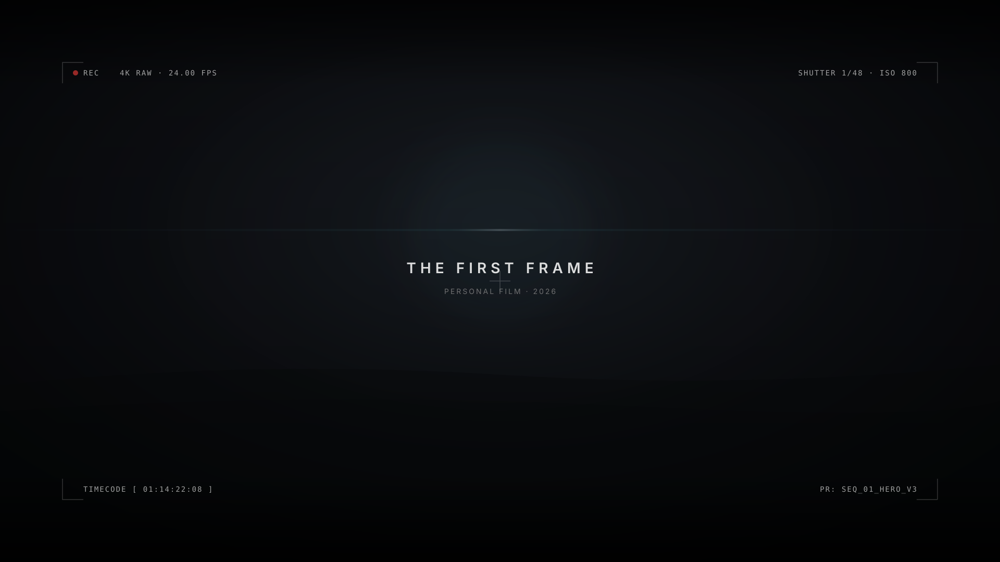
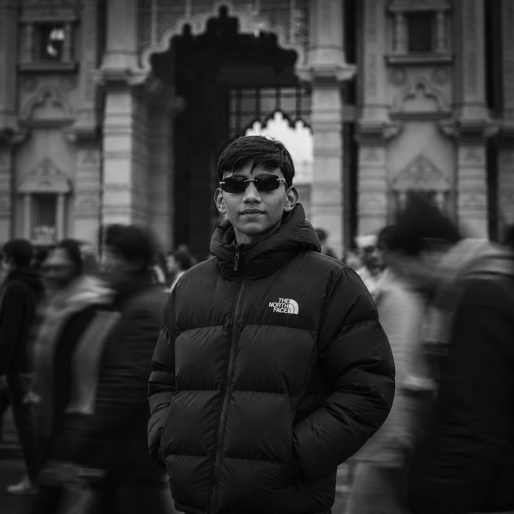

FEATURED WORK

CHRONICLES OF LIGHT
A narrative-driven edit exploring isolation, tempo, and optical contrast. Constructed to examine how silence and micro-pacing shape viewer tension across a cinematic sequence.
THE EDIT
STORY
01Every sequence must serve an emotional or conceptual purpose. Editing is not assembling fragments—it is excavating the underlying truth of the scene and eliminating everything that dilutes it.
RHYTHM
02Pacing is musical. The duration of a cut dictates breathing room, tension, and release. True rhythm comes from listening to the internal heartbeat of a performance.
EMOTION
03A cut is an emotional contract with the viewer. By interweaving precise image selection with deliberate sound design, editorial timing shapes empathy.
VISUAL LANGUAGE
04Angles, eyelines, spatial geography, and lens choice speak a silent grammar. An editor orchestrates these cues so the visual progression feels instinctive.
TOOLS I USE
No arbitrary skill percentages. Each tool in my post-production pipeline serves a specific, deliberate role in transforming raw media into finished cinema.
BEYOND THE EDIT

ABHAY SINGH
"I’m interested in the space between one shot and the next — where rhythm, emotion and story come together."
Editing is currently my primary focus. It is the craft where narrative structure and technical precision converge. Through cutting, I explore how pacing alters perception and how sound design gives visual moments physical gravity.
Writing helps me understand character motivation and thematic arcs. Cinematography trains my eye for composition, texture, and lens perspective. Together, these disciplines inform my long-term ambition: directing and comprehensive filmmaking.
CURRENTLY BUILDING
Have a project in mind?